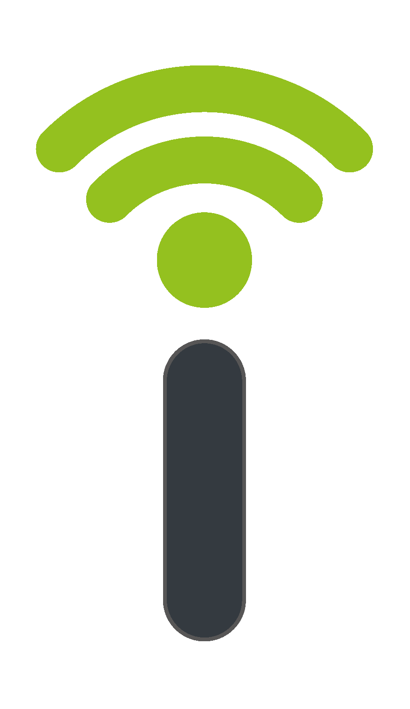

Online

01
Sotkis — Intelligent Systems
Design do website, da aplicação móvel e da plataforma digital da Sotkis. Um sistema completo de produto digital — da identidade visual à experiência de utilizador em todas as superfícies.
Visitar Website